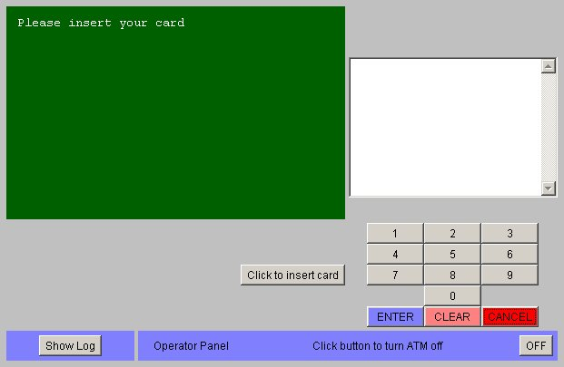
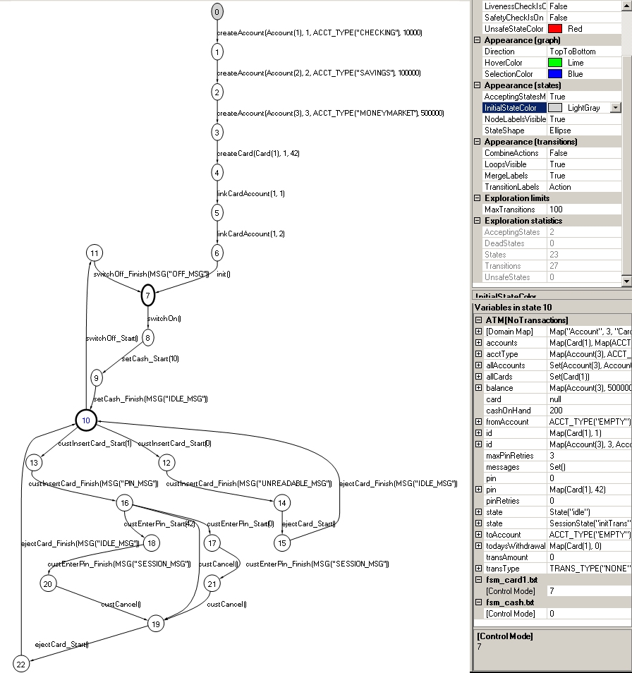
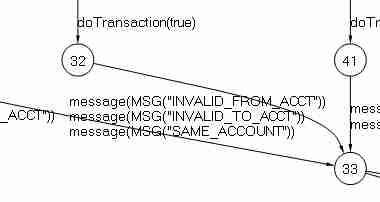

ATMExample
Chapter 10 in Practical
Model-Based Testing: A Tools Approach presents The ATM Case Study; (A
control-oriented model in UML) using an ATMExample
developed by Russell C. Bjork for a university course on Object-Oriented
Software Development.
This
ATMExample comes with a Java implementation of a simulated ATM. I have modelled
the ATM in C# (using Visual C# 2008 Express) and made a Java test harness
(using NetBeans 6.7.1).
ATM
The ATM
simulator looks like this

You can try
it out as an applet.
C# model
The C#
model comprises 7 cs files with a total of 23 actions in 567 lines of text
- ATM for initial states and actions
- Session for transactions
- Account and Card and CardAccounts modelling bank
objects
- Test with features for testing
- Factory with various combinations
of features
Here is an
excerpt from ATM.cs modelling the operator loading a number of $20 bills into the machine
internal static State state
= State.init;
internal static int cashOnHand
= 0;
[Action]
static MSG setCash(int
bills)
{
cashOnHand = bills * 20;
state = State.idle;
return
MSG.IDLE_MSG;
}
static bool setCashEnabled() { return
state == State.waitingForCash; }
Scenarios
There are a
number of scenarios specified by means of Finite State Machines, e.g., for
limiting the number of bills in the cash register to 10
FSM(0,
AcceptingStates(0), Transitions(t(0, setCash_Start(10), 0)))
The two cards available in the simulation are
specified in fsm_cards.txt ending
with an init() action taking the model out of the
initial setup state. With fsm_card1.txt
only card1 can be used.
Other fsm’s specify scenarios for pin errors or withdrawal of $200.
The fsm’s can be combined with the model and
its features to give a smaller, more tractable state space.
Graph
The Model
Program Viewer mpv visualizes states and transitions. In the scenario shown
the operator can switch the ATM on and off and a user may insert an unknown
(unreadable) card or card1 (with correct or wrong pincode) and retrieve it
again without performing any transactions.
mpv /r:ATM.dll
ATM.Factory.CreateNoTransactions /fsm:fsm_cash.txt /fsm:fsm_card1.txt

Test Suite
The Offline
Test Generator otg generates a test suite comprising a number of test cases
in an output file. Below is the test suite corresponding to the graph above.
otg r:ATM.dll
ATM.Factory.CreateNoTransactions /fsm:fsm_cash.txt /fsm:fsm_card1.txt /file: testsuite_notrans.txt
TestSuite(
TestCase(
createAccount(Account(1),
1, ACCT_TYPE("CHECKING"), 10000),
createAccount(Account(2),
2, ACCT_TYPE("SAVINGS"), 100000),
createAccount(Account(3),
3, ACCT_TYPE("MONEYMARKET"), 500000),
createCard(Card(1),
1, 42),
linkCardAccount(1,
1),
linkCardAccount(1,
2),
init(),
switchOn(),
setCash_Start(10),
setCash_Finish(MSG("IDLE_MSG")),
custInsertCard_Start(0),
custInsertCard_Finish(MSG("UNREADABLE_MSG")),
ejectCard_Start(),
ejectCard_Finish(MSG("IDLE_MSG")),
custInsertCard_Start(1),
custInsertCard_Finish(MSG("PIN_MSG")),
custEnterPin_Start(42),
custEnterPin_Finish(MSG("SESSION_MSG")),
custCancel(),
ejectCard_Start(),
ejectCard_Finish(MSG("IDLE_MSG")),
custInsertCard_Start(1),
custInsertCard_Finish(MSG("PIN_MSG")),
custCancel(),
ejectCard_Start(),
ejectCard_Finish(MSG("IDLE_MSG")),
custInsertCard_Start(1),
custInsertCard_Finish(MSG("PIN_MSG")),
custEnterPin_Start(0),
custEnterPin_Finish(MSG("SESSION_MSG")),
custCancel(),
ejectCard_Start(),
ejectCard_Finish(MSG("IDLE_MSG")),
switchOff_Start(),
switchOff_Finish(MSG("OFF_MSG"))
)
)
The otg
tool produces a test suite with minimal transition coverage, where the chinese postman covers all transitions in the graph.
Test Harness
The
Java test harness consists of 3 classes
- NewMain wraps the original Main
class and starts the test with a file or remote stepper
- NewATM wraps the original ATM
class in order to exit on exceptions
- NewSimulation wraps the
original Simulation class and intercepts various method calls
The ATM
simulation uses AWT so object based access to the GUI is not available and a
robot pixel based access is not feasible. However, interception of method calls
in the implementation is a useful strategy when the implementation is
well-structured.
Offline Test
The test
suite can be executed by the test harness invoking the file stepper
java -Djava.util.logging.config.file=logging.properties
-jar ATM.jar -f
testsuite_notrans.txt 10000
The
filestepper is instructed to timeout if 10 seconds pass without calls from the
harness. This will exercise the ATM GUI and produce the following log
…
readLine: switchOn()
newSwitchChanged: true
readLine:
setCash_Start(10)
getInitialCash: 20*10
display: Please insert
your card
readLine:
setCash_Finish(MSG("IDLE_MSG"))
readLine:
custInsertCard_Start(0)
newCardInserted:
readCard: 0
display: Unable to
read card
readLine:
custInsertCard_Finish(MSG("UNREADABLE_MSG"))
readLine:
ejectCard_Start()
display: Please insert
your card
readLine:
ejectCard_Finish(MSG("IDLE_MSG"))
…
readLine:
switchOff_Finish(MSG("OFF_MSG"))
read: *** TestCase
End ***
read: *** TestSuite
End ***
main: *** EOF
TestSuite ***
The offline
test may also run with the remote stepper. Start the Java test harness first
java
-Djava.util.logging.config.file=logging.properties -jar ATM.jar -s 4711
and then the Conformance
Tester
ct
/iut:RemoteStepperProxy.Stepper.Create /r:RemoteStepperProxy.dll
/testSuite:testsuite_notrans.txt /logfile:ct_notrans.log
The file RemoteStepperProxy.dll.conf in the same directory as RemoteStepperProxy.dll
configures it to
connect to localhost:4711. After the run the log contains
TestResult(0,
Verdict("Success"), "",
Trace(
createAccount(Account(1),
1, ACCT_TYPE("CHECKING"), 10000),
createAccount(Account(2),
2, ACCT_TYPE("SAVINGS"), 100000),
…
ejectCard_Finish(MSG("IDLE_MSG"))
)
)
Online Test
The ATM
model does not know the bank implementation of transaction validation, which
shows as multiple transitions between same start and end states with merged
labels in the graph

The
generated test suite fails because the implementation never returns INVALID_TO_ACT when the from
account is invalid. But this (shallow) non-deterministic model may be tested
on-the-fly with ct and the asynchronous stepper. Start the Java test harness
first, instructing it to send message actions as observations to localhost:4712
java
-Djava.util.logging.config.file=logging.properties -jar ATM.jar -s 4711
127.0.0.1 4712
and then the Conformance
Tester
ct
/iut:RemoteStepperProxy.AsyncStepper.Create /r:RemoteStepperProxy.dll
/r:ATM.dll
ATM.Factory.Create
/fsm:fsm_card1.txt
/fsm:fsm_transfer.txt /fsm:fsm_wait.txt
/o:message /runs:1
/steps:1000 /continueOnFailure-
/logfile:ct_transfer-nd.log
The ct tool
uses the default random strategy for selecting the next action but waits for
observable message actions before proceeding. It stops after 1000 steps. You
could use this to produce random tests within the scenario each time the test
is run, e.g., in a continuous integration process. Or you could seed the random
generator to reproduce test runs or implement your own strategy for ct to use.
The ATM
model has a Deterministic feature that corresponds to the ATM simulation’s transaction validation
sequence. Using this in combination with the model, with ATM.Factory.CreateDeterministic, allows you to generate usable test
suites - at the cost of relying on implementation knowledge.